Este proceso tiene como objetivo mostrar los tipos de operaciones bancarias con las que cuenta el sistema. Para ello debemos dirigirnos al menú de Mantenimientos y luego seleccionar la opción "Tipo de operacion bancaria".
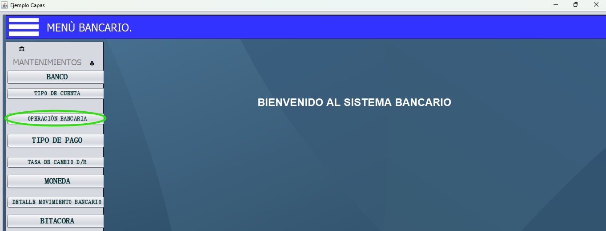El formulario contiene dos campos principales: uno para el nombre del tipo de operacion bancaria y otro para la descripcion del tipo de operacion bancaria.
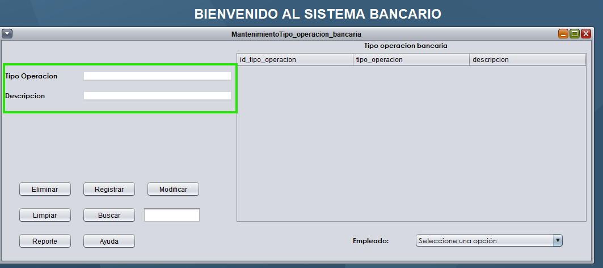En el primer campo se debe ingresar el tipo de operacion bancaria que se esta realizando (Retiro, Tranferencia, etc).
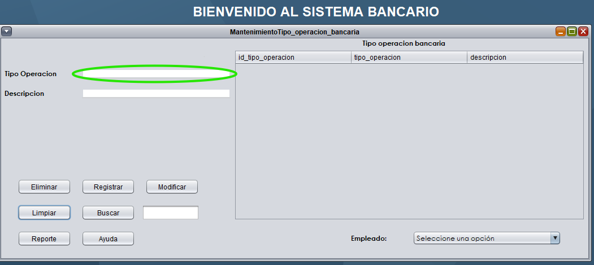Debes ingresar la descripcion del tipo de operacion bancaria.
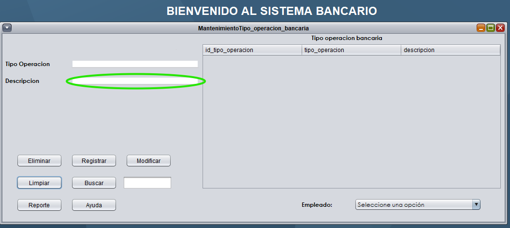Todos los botones se activan haciendo clic sobre ellos y realizan diferentes acciones en el sistema.
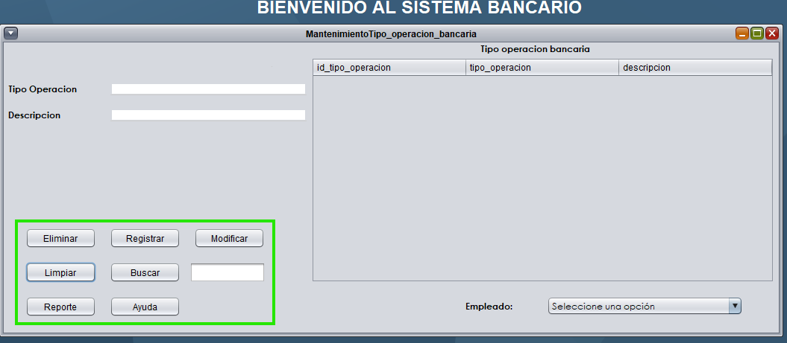Después de ingresar los valores requeridos, este botón registra el nuevo tipo de operacion bancaria en el sistema.
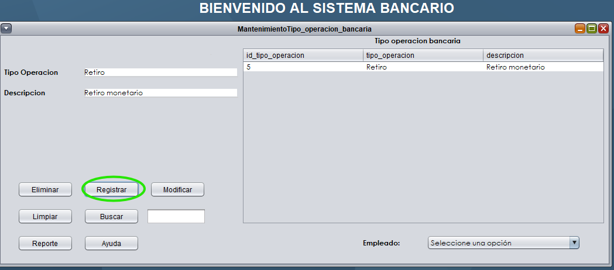Para usar este botón, primero debes:
1. Ingresar o buscar el registro que deseas eliminar
2. Una vez que el sistema muestre el registro, haz clic en "Eliminar" para borrarlo permanentemente
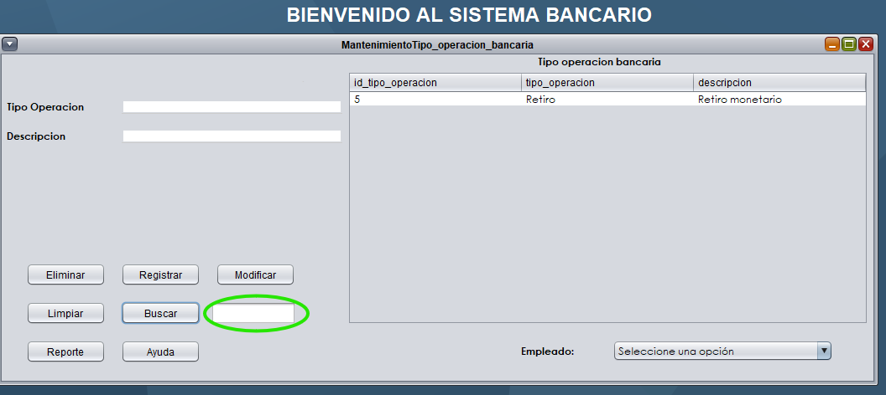Para modificar un registro existente:
1. Primero debes buscar el registro que deseas actualizar
2. Luego edita los campos que necesites cambiar
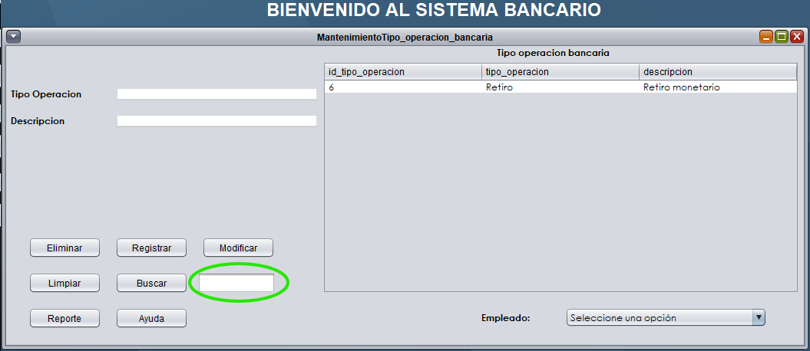3. Finalmente, haz clic en "Modificar" para guardar los cambios. El sistema te mostrará un mensaje de confirmación.
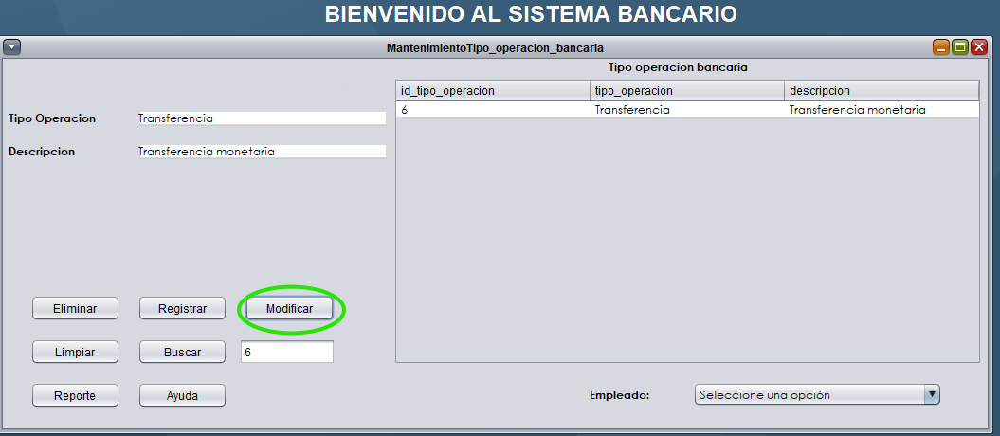Este botón borra todos los campos del formulario, permitiéndote comenzar desde cero sin necesidad de cerrar y volver a abrir la ventana.
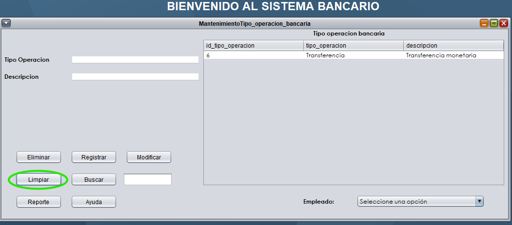Para buscar un registro específico:
1. Ingresa el ID del registro que se desea buscar, en este caso solo acepta valores enteros numericos que existan
2. Haz clic en "Buscar" para que el sistema muestre los resultados dentro de los cuadros correspondientes a tipo de operacion y su descripcion correspondiente
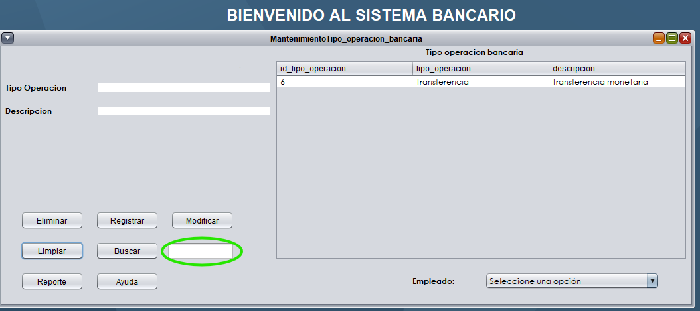Los registros encontrados aparecerán en la tabla inferior, donde podrás seleccionarlos para modificarlos o eliminarlos.
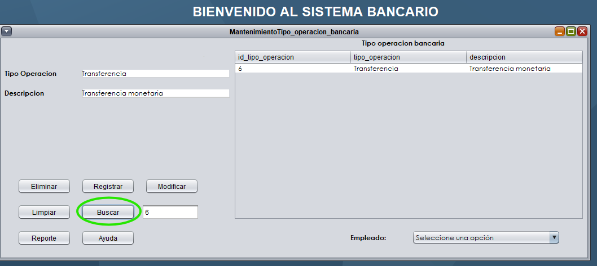Esta tabla muestra todos los registros de los tipos de operaciones bancarias encontradas en las búsquedas. Desde aquí puedes seleccionar cualquier registro para editarlo o eliminarlo.
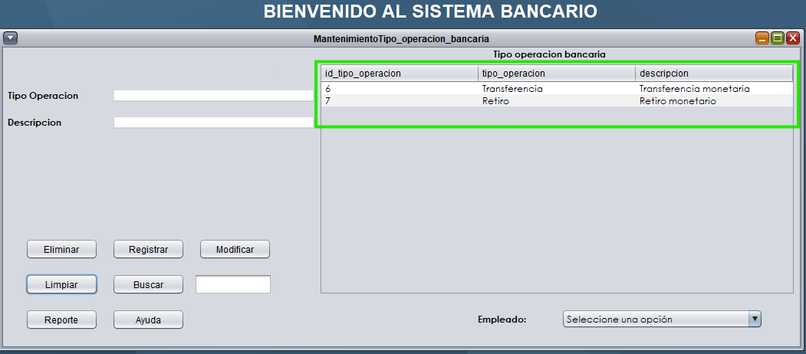